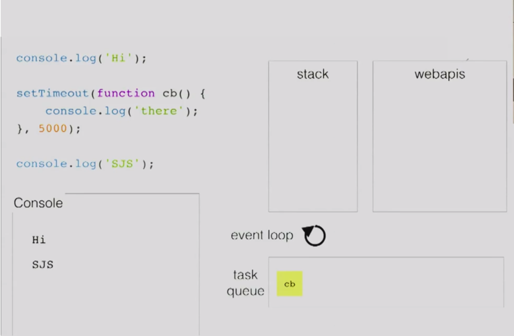

Child Processes and Timers in Node
Recently, I ran into an issue with a Node application that (unfortunately) necessitated the use of a large chunk of blocking, long-running code, as well as a means to cut off execution if it was taking too long. As we tend to do, I started with attempting a simple solution, using Node’s native Timer module to solve the problem. I created a new branch and refactored the module with one main timer to schedule a ‘timeout’ event as well as a mechanism to yield to the event loop at specified points to see if the ‘timeout’ event had occurred.
The problem was, the callbacks scheduled by timers don’t actually execute when the delay completes, as I expected. Those callbacks actually end up in the ‘task queue’, and the event loop will wait for the stack to be clear before moving an action from the task queue onto the stack. In the case below the cb that logs 'there' would be moved onto the stack and immediately executed. Unfortunately for me, this meant that the callback in a Node timer has no ability to interrupt a full stack of function calls from the piece of long-running code.
 (Image from Philip Robert’s “Help, Help, I’m stuck in an event-loop”.)
My next attempt at a solution was to utilize Asynquence, Kyle Simpson's promise-style library built to accomplish sequences of tasks. This library has an interesting feature, called gates, that allow you to wait for multiple segments to complete before moving on to the next step in the sequence, initialized with ASQ.
Example gate:
ASQ("message")
.gate(
function(done,msg){
setTimeout(function() {
done(msg + " 1");
},200);
},
function(done,msg){
setTimeout(function() {
done(msg + " 2");
},10);
})
.val(function(msg1,msg2) {
msg1; // "message 1"
msg2; // "message 2"
});
One special variation of the gate-step is the first(...) statement that will proceed to the main sequence upon completion of any parallel segment. It seemed perfect for my uses, but unfortunately, after refactors and testing, it became apparent during a chat with Kyle via Twitter that the long-running code was blocking execution of the other segments, which prohibited the timer callback from cutting in, similar to with timers.
My final (and successful) attempt at a solution was to use Node's Child Process module. Child Processes are very powerful, and can be a means to spawn a new Node process, i.e. another instance of V8. Child processes can be as insulated from or as integrated with the main Node process as is required by your needs, and have a very simple child.kill() syntax to end a child process.
There are various methods to create a child process synchronously and asynchronously, giving you the option to execute commands or entire files. I found that child_process.fork(modulePath, [arguments], [options]) matched my needs nicely. It allowed me to utilize the parent working directory (process.cwd()) as the current directory, to retain proper paths for all of the necessary I/O operations in the blocking code. It also has a built in method of communication between processes:
// in parent:
child.send('This is your message!')
// in child:
process.on('message', function(msg) {
// do something with msg...
}
After one final refactor, this method worked. Amidst a relatively fragile chain of promises in my Express app, I was able to fork a child process with a long-running module, flexibly tell it when to start execution, and cut it off after a period of a few seconds. Check out the simplified code below:
Initiate child process:
var pwd = process.cwd();
var child = child_process.fork(__dirname + '/slowModule.js', {cwd: pwd});
Set the timer to cut off child process after 5s:
var mainTimer = setTimeout(function() {
child.kill('SIGINT');
// SIGINT is default kill signal
}, 5000);
Send message to child process on completion of an asynchronous I/O task:
fs.writeFile('path/to/file.txt', param, function(err) {
if (err) // handle error
child.send('GO');
});
In the child process ('slowModule.js'):
process.on('message', function() {
// execute module
Listen for the results of the long-running code:
child.stdout.on('data', function(data) {
console.log('child process complete, results: ' + data);
});
After much trial and error, this proved to be a perfect way to solve my original problem. By isolating execution of a block of long- (or maybe indefinitely-) running code in a new instance of V8/Node, I was able to control execution without it affecting my Node/Express server and the rest of the application.
This was a great learning experience, but I can tell it's only the tip of the iceberg when it comes to the capabilities of running parallel or clustered Node processes.